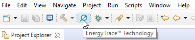
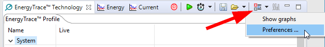
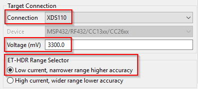
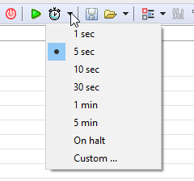
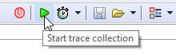

EnergyTrace User Guide¶
EnergyTrace™ technology is a power analyzer tool for CCS that measures the application’s current consumption. The tool can be used stand-alone as a power profiling tool, or in EnergyTrace++ mode within a debug session for code analysis to help optimize the application for ultra-low-power consumption.
For further information regarding the EnergyTrace Tool, see the EnergyTrace Tool page. Additionally, please visit further EnergyTrace documentation at EnergyTrace overview.
EnergyTrace stand-alone Instructions¶
The following discusses the necessary steps to use EnergyTrace in stand-alone-mode on CC13xx or CC26xx LaunchPad. In stand-alone mode (EnergyTrace mode), the debugger is not active and the displayed current consumption is what to expect for the final application. As opposed to EnergyTrace++ where the debug interface on the device is active and the current consumption from the debugger will be added to the displayed current.
Flash the target device with the application to be analyzed.
Make sure no debug session is active and click the EnergyTrace Button as seen in Figure 153.
Figure 153. Start EnergyTrace¶
A dialog with instructions on how to use EnergyTrace Stand-alone Measurement Mode will pop-up. Click
Proceedto continue.The first time EnergyTrace is being used within a CCS Workspace some settings needs to be set. In the EnergyTrace Window, click on the
Advanced Menuicon and selectPreferences, as Figure 154. shows.Figure 154. EnergyTrace Preferences menu¶
Under
Target Connection, setConnectiontoXDS110andVoltageto 3300.0 mV.ET-HDR Range Selectorshall be set toLow current, narrower range higher accuracy. If you want to save the captured data to a .cvs-file for further analysis, selectRaw data to CSV file. You can also select the battery cell type the application will be using to get an estimated life time of the application. ClickOkto save the preferences.Figure 155. EnergyTrace Settings¶
Select how long you want to capture data by clicking the
Select Measurement Durationbutton as in Figure 156.Figure 156. Select Measurement Duration¶
To start capturing data, click the green play button.
Figure 157. Start trace collection¶
When EnergyTrace is finished capturing data, review the application’s power profile and have a closer look in the Current graph. Figure 158. shows a zoomed-in current graph of BLE advertising.
{kind=link}
EnergyTrace++ Instructions¶
To run EnergyTrace++, which allows more detailed data regarding power consumption, the Target Configuration file must be configured to allow for a different debugging interface. Specifically, to use EnergyTrace++, the debugger must be set to 4-pin cJTAG mode. The following discusses the necessary steps to modify the Target Configuration file and view EnergyTrace++ data on CC13xx or CC26xx LaunchPad.
Warning
In EnergyTrace++ mode, the displayed current consists of the application current consumption AND the device debugger current consumption. Use EnergyTrace stand-alone mode to display only the application current consumption.
EnergyTrace++ Update Target Configuration Instructions¶
In the CCS, using the Project Explorer, navigate to the
targetConfigsfolder.Double click on the
*.ccxmlfile to open a configuration menu as seen in Figure 159.On the bottom of the window, navigate to the
Advancedtab as seen in Figure 160.In the
All Connectionswindows pane, click on the highest level from the list tree as seen in Figure 161.In the
Connection Propertieswindow pane, modify theJTAG/SWD/cJTAG Modeparameter tocJTAG (1149.7) 4-pin standard modefrom the dropdown menu as seen in Figure 161.
Figure 161. Configure 4-pin cJTAG Mode¶
After selecting this option, click
Savein the previousAll Connectionswindow pane.Close the
.ccxmlfile.
{kind=link}
{kind=link}
Using EnergyTrace++ Instructions¶
This section assumes the user has already configured their Target Configuration
settings to point use cJTAG (1149.7) 4-pin standard mode as described in
the EnergyTrace++ Update Target Configuration Instructions section above.
After the Build has successfully completed,
Debugthe project.Open the EnergyTrace Tool by clicking the button seen below in Figure 162.
Figure 162. Enable EnergyTrace Tool¶
On the far right of the
EnergyTrace Technologywindow, click theSwitch to EnergyTrace++button as seen in Figure 163.You should see an additional
Statestab popup.Run the Debug session, click the green arrow button (F8).
You should now be able to observe the enhanced EnergyTrace++ details in the
EnergyTrace TechnologyandStatestabs as seen in Figure 164. and Figure 165.
{kind=link}
{kind=link}
{kind=link}
{kind=link}
Using EnergyTrace with an External Target¶
The power profile of an external target can be measured using EnergyTrace and a compatible debugger: an XDS110 ETHDR Debug Probe or a CC13xx or CC26xx LaunchPad Kit (the debug probe is embedded on the LaunchPad board). In this section, we will use a CC26x2R LaunchPad to measure the power profile of a CC2640R2F.
Note
Other types of LaunchPad that include a XDS110 ETHDR Debug Probe may be used instead of CC26x2R LaunchPad
Before getting started, make sure the external target is already flashed with the application firmware to be tested.
The following steps are required to use EnergyTrace with an external target:
Remove all the jumpers from the top row of both LaunchPads as shown in Figure 166..
Use jumper wires to supply power to the CC2640R2F from the CC26x2R LaunchPad as shown below.
At this point, connect only the CC26x2R LaunchPad to the PC via a USB cable. The external target will receive power from the CC26x2R LaunchPad.
Follow the steps in EnergyTrace stand-alone Instructions to measure the power profile of the external target.
Tip
Ensure that only one CC26x2R LaunchPad is connected to the PC at a time to ensure the correct LaunchPad is automatically selected by EnergyTrace.
Figure 166. External Target Hardware Configuration¶
The above diagram shows the hardware setup required to use EnergyTrace to measure the power profile of the CC2640R2F.
Note
With the jumpers removed, a 10-pin JTAG cable can be connected to the external target for debugging purposes. If UART is required, jumper wires should be placed to connect the TX/RX lines of the external target to the CC26x2R LaunchPad.
Troubleshooting¶
If EnergyTrace is not able to properly setup remote controls for the device, try closing CCS, resetting your Evaluation Board and starting again.